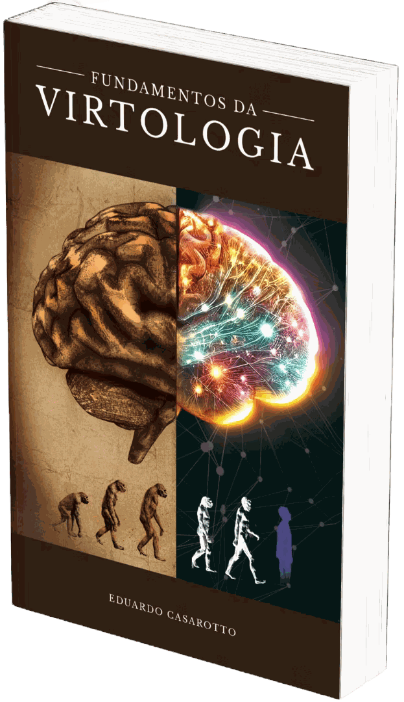

Livro · Eduardo Casarotto
Fundamentos da Virtologia
A base inteira da escola em 660 páginas. Com aulas em vídeo e os exercícios de neuroplasticidade das virtudes incluídos.
As duas versões incluem
Aulas em vídeo sobre a base da Virtologia
Eduardo Casarotto apresentando o método do começo ao fim, em linguagem simples: as faixas de evolução, as 51 necessidades humanas, o aparelho psíquico, as virtudes, o inconsciente e os mecanismos de defesa. Com casos reais explicados um a um.
Os 33 exercícios de neuroplasticidade
Um exercício para cada uma das 33 virtudes, com o passo a passo de aplicação. É por onde a pessoa começa a usar a Virtologia em si mesma.
Os 50 capítulos
Do funcionamento do aparelho psíquico ao manejo de casos específicos. Cada quadro clínico tem o seu próprio capítulo, com a leitura da Virtologia sobre o que sustenta aquilo e o caminho de tratamento.
Faixas de Evolução
Os graus em que o cérebro humano opera, do mais primitivo ao mais desenvolvido. É o que determina o que uma pessoa consegue fazer com o que ela sabe.
Grupo de Necessidades Humanas
As 51 necessidades, organizadas em cinco grupos. Cada uma com uma reserva que não pode secar nem transbordar, porque os dois extremos geram sintoma.
Processo Civilizador e a Quarta Revolução Industrial
Como a humanidade chegou até aqui, e o que a tecnologia mudou no funcionamento das pessoas.
A Falta
O buraco deixado por algo que não aconteceu. É a origem de quase todo movimento humano, e o que a pessoa passa a vida tentando cobrir.
O Desejo
Por que o desejo nasce da falta, e por que realizá-lo nunca a preenche. A raiz da compulsão explicada.
As 33 Virtudes
Cada virtude, o que ela constrói no cérebro, e a ordem de dependência entre elas.
Estruturas Preexistentes
O que já vem montado antes de qualquer experiência, e o que é construído depois.
O Inconsciente Booleano
O inconsciente descrito como um sistema de cálculo que não entra em contradição lógica. Não é um depósito de conteúdos escondidos: é uma conta que dá para nomear.
Redes Neurais Biológicas e o Inconsciente Booleano
Como esse cálculo acontece fisicamente nas redes de neurônios.
Virtudes e Neuroplasticidade
O mecanismo pelo qual uma virtude vira estrutura permanente no cérebro.
As 3 Estruturas
Neurose, psicose e perversão na leitura da Virtologia, e como diferenciá-las na prática.
O Orgulho e o Egoísmo
Os dois sistemas neurofuncionais que estão por trás da maior parte do sofrimento psíquico. O capítulo que sustenta a escola inteira.
Associações, Representações e Simbólico
Como o cérebro liga uma coisa à outra, e por que uma palavra qualquer pode disparar uma reação desproporcional.
Mecanismo de Defesa e Inconsciente Booleano
Os mecanismos de defesa um a um, e a lógica de cálculo que os sustenta.
Transferência
O fenômeno descrito pela psicanálise, relido pela lógica do inconsciente booleano e da falta primordial.
A Vida Psíquica
Como as peças internas funcionam juntas no dia a dia de uma pessoa.
A Não Ressignificação de Memória
Por que a mudança não se produz reescrevendo o passado. Um dos pontos em que a Virtologia mais se afasta da clínica tradicional.
Aparelho Psíquico da Virtologia
O mapa completo das peças internas: ego, Self, superego, complexos, holofote e tanque. Cada uma com correspondência descrita no cérebro.
Funções do Ego
O que o ego faz, quando ele consegue fazer, e o que acontece quando não consegue.
Consciência
O que é estar consciente, e por que a consciência plena é mais rara do que se imagina.
Valores, Crenças e Princípios
Como se formam, como governam a decisão, e o que é preciso para mudá-los.
Teoria da Neutralidade
A proposta da Virtologia sobre o ponto a partir do qual se lê alguém sem projetar a própria história.
Leis do Universo
Movimento, caos e servir. As regras que valem para qualquer pessoa, queira ela ou não.
Personalidade
Temperamento, caráter, identidade e couraça. O capítulo mais longo do livro, e a base de toda a leitura clínica.
Transtornos Psiquiátricos e Traumas Graves
Onde termina o alcance do trabalho com virtudes e onde começa a necessidade do cuidado médico.
Transtorno de Personalidade Orgulhosa
Os quadros que se organizam em torno da defesa da própria posição.
Transtorno de Personalidade Egoísta
Os quadros que se organizam em torno da própria vantagem.
Self
O eu profundo, e a distância entre ele e o papel que a pessoa representa.
Pensamentos Positivos e Negativos
O que a Virtologia diz sobre a ideia de trocar pensamento ruim por bom, e por que isso não sustenta mudança.
Sexualidade
A leitura da Virtologia sobre o tema, ligada à personalidade e às necessidades.
Inveja e Ciúmes
Duas expressões diretas do orgulho, explicadas pelo cálculo de posição.
Crítica
Por que a crítica dói tanto, e o que muda quando a humildade fica gravada.
Fibromialgia e Síndrome do Pânico
Dois destinos diferentes da mesma tensão acumulada, e o manejo de cada um.
O Brinquedo e o Brincar
Como o brincar molda valores e identidade na infância, e o que mudou entre as gerações.
Outro-Realidade
A capacidade de enxergar o outro sem projetar nele a própria história. Uma competência que se constrói.
Suicídio
A leitura virtológica da ideação suicida e o manejo desses casos.
TOC
O transtorno obsessivo compulsivo lido pela lógica do controle.
TOC Inverso
Um conceito novo da Virtologia: a compulsão pela desorganização e a recusa do controle. O contrário do TOC clássico.
Transtorno Bipolar de Humor
O que é determinação biológica, o que não é, e onde o trabalho com virtudes ajuda.
Longevidade
A relação entre neuroplasticidade, caridade e expectativa de vida.
Criminalidade
O crime lido pelo orgulho e pelo egoísmo. A base do trabalho em unidades prisionais.
Vício de Adrenalina no Aposentado
Por que tanta gente adoece ao parar de trabalhar, e o que sustenta isso.
Vingança
O orgulho ferido e a necessidade de devolver ao outro a dor que se sentiu.
Família do Futuro
O que muda na estrutura familiar conforme as pessoas evoluem de faixa.
Cálculo de Familiar
A conta silenciosa que organiza os papéis dentro de uma família.
As Fases de Desenvolvimento da Personalidade
As experiências que constroem cada fase da vida, do período intrauterino à longevidade, e os três desfechos possíveis de cada mandato. Mais de oitenta páginas.
Sintoma
O sintoma como a forma que a pessoa encontrou de evitar situações em que o ego dela é frágil.
Manejos e Técnicas
Como conduzir a sessão, o que perguntar, o que nunca dizer, e como montar o plano de trabalho. O capítulo que transforma teoria em consultório.
Mapa de Identificação
O instrumento para ler um caso inteiro e localizar onde intervir.
Círculo das Relações
Como as relações se organizam em camadas, e o que cada camada exige da pessoa.
Vem com aulas e com 33 exercícios de neuroplasticidade
Comprar o livro dá acesso a duas coisas que não estão nas páginas.
As aulas em vídeo
Eduardo Casarotto apresentando a Virtologia inteira, em linguagem simples: as faixas de evolução, as necessidades humanas, o aparelho psíquico, as virtudes, o inconsciente e os mecanismos de defesa.
É a explicação falada de quem escreveu o livro, com exemplos de casos reais.
Os 33 exercícios de neuroplasticidade
Um exercício para cada uma das 33 virtudes, com o passo a passo de aplicação, o tempo de repetição e o critério para saber se ficou gravada.
É por onde a pessoa começa a usar a Virtologia em si mesma, antes de qualquer outra coisa.
Ler o livro explica. Os exercícios são o que constrói.
Porque a Virtologia parte de um ponto que a neurociência já estabeleceu: conhecer não é a mesma coisa que aprender. O que a pessoa entende fica numa memória curta. O que muda o comportamento é o que vira memória de longo prazo, e isso só acontece com repetição.
Público indicado
Para quem atende
Psicólogos, psicanalistas, psiquiatras, terapeutas de outras linhas e profissionais que trabalham com desenvolvimento humano.
É o livro que sustenta a Formação em Virtologia, e todo o conteúdo dela vem daqui.
Para quem quer entender a si mesmo
Não é preciso ser da área. O livro é escrito de um jeito que qualquer pessoa acompanha, e os exercícios de neuroplasticidade podem ser aplicados na própria vida.
Qual é a diferença entre o livro e a Formação?
São coisas diferentes, e a maioria dos alunos entra na Formação sem ter lido o livro antes.
O livro entrega a teoria completa, e é a melhor forma de examinar a Virtologia com profundidade antes de decidir qualquer coisa.
A Formação aprofunda cada um dos assuntos que estão no livro. Cada capítulo que aqui ocupa algumas páginas vira aula inteira, com desdobramento, exemplos e as perguntas que só aparecem quando alguém está aplicando de verdade.
E ela entrega o que nenhum livro entrega: supervisão de casos reais toda semana, correção do seu manejo por um supervisor, e o estágio com paciente. É a diferença entre saber a teoria e saber conduzir alguém.
Muita gente faz o caminho inverso: entra na Formação e lê o livro ao longo do curso, porque as aulas seguem a ordem dele.
Quem escreveu
Eduardo Casarotto é pesquisador, autor, consultor, filantropo, fundador do Instituto Virtudes e criador da Virtologia e da Humanização 2.0. Condecorado com o título de Comendador Cavaleiro pela Câmara de Justiça de São Paulo.
Com mais de 25 anos de atuação como terapeuta e consultor organizacional, formou mais de 2.000 terapeutas e dedicou sua trajetória ao estudo do funcionamento humano e da relação entre ambiente, comportamento e adoecimento.
Ao longo de sua atuação, desenvolveu trabalhos de formação e orientação metodológica para empresas, instituições públicas, organizações, hospitais, escolas e unidades prisionais, levando sua abordagem para contextos onde o funcionamento humano precisa ser compreendido não apenas no indivíduo, mas também nos sistemas em que ele vive e trabalha.
É autor de mais de 20 livros e de artigos publicados em periódicos científicos. Sua metodologia já foi apresentada no Plenário do Senado Federal, discutida em ambientes institucionais e aplicada em diferentes realidades humanas, organizacionais e sociais.
O que costumam perguntar
As aulas vêm nas duas versões?
Sim. Tanto a versão física quanto a digital dão acesso às aulas em vídeo e aos exercícios de neuroplasticidade.
Preciso ser da área da saúde para entender?
Não. O livro é denso, mas é escrito em linguagem acessível, e cada conceito próprio é explicado quando aparece.
Dá para aplicar os exercícios em mim mesmo?
Sim. Os exercícios de neuroplasticidade das virtudes estão incluídos justamente para isso. Aplicar em outra pessoa, em contexto clínico, é outra coisa: depende da sua formação e do que o seu conselho de classe permite.
Este livro substitui tratamento?
Não. Nos quadros com determinação biológica, a Virtologia soma-se ao tratamento médico e não fica no lugar dele. Se você está em sofrimento, procure ajuda profissional.
Qual a diferença entre esta e a próxima edição?
A obra é revisada e ampliada periodicamente. A edição em circulação é sempre a mais recente disponível.
Se você quer aplicar a Virtologia com pacientes, o caminho é a Formação, que tem supervisão de casos reais e estágio supervisionado:
Conhecer a Formação em Virtologia